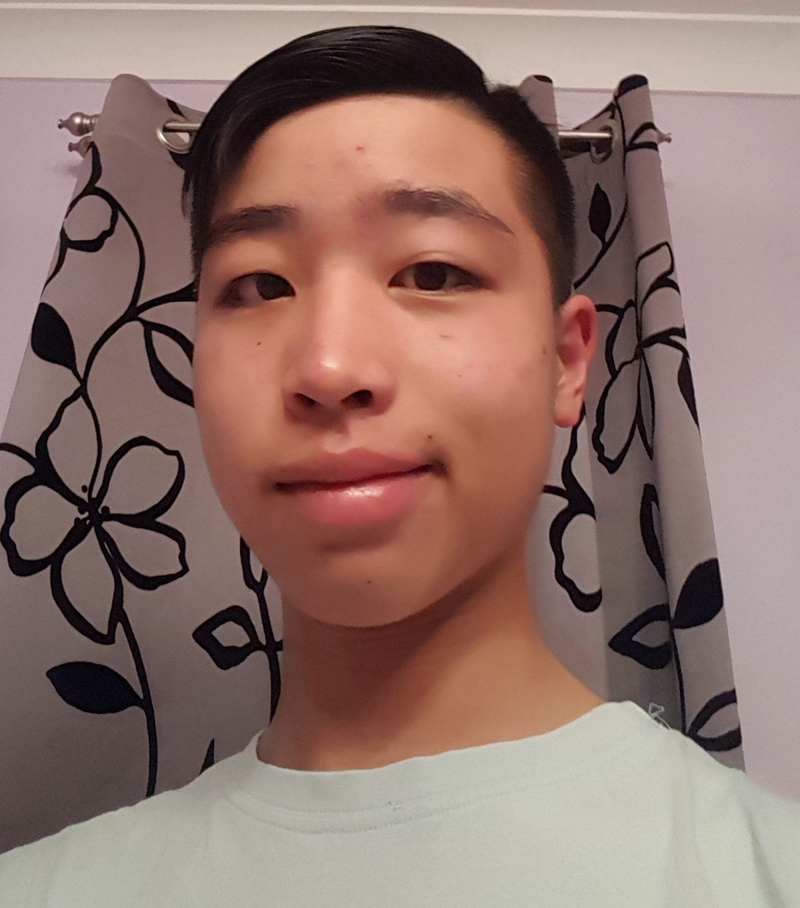

About Me
Name:
Toby Noithongkham
Date of Birth:
10th, September, 2005
Education:
Canley Vale Public School, Hurlstone Agricultural High School
Interests:
Engineering-based projects, Video Games, Teaching, Cooking
Studying:
Engineering, IST, Science, Maths, English, HSIE, PE, Agriculture
Accomplishments:
School Captain of Canley Vale Public School, 2017
Goals for future:
Career in teaching (specifically in the field of Engineering), Having a sidejob that follows a hobby (working as a part-time chef)
Overall:
I enjoy hands-on projects and tend to favour working in a team, where social play and cooperation plays major roles. Often I do enjoy the social aspects of like, which is onee of the many reasons as to why I wish to be a teacher. The idea of being a teacher, who can work on lots of projects with students in a messy workshop appeals more to me than working in an office and speaking with students who are very smart and are genuinely curious to learn more about their work is what I wish for.
